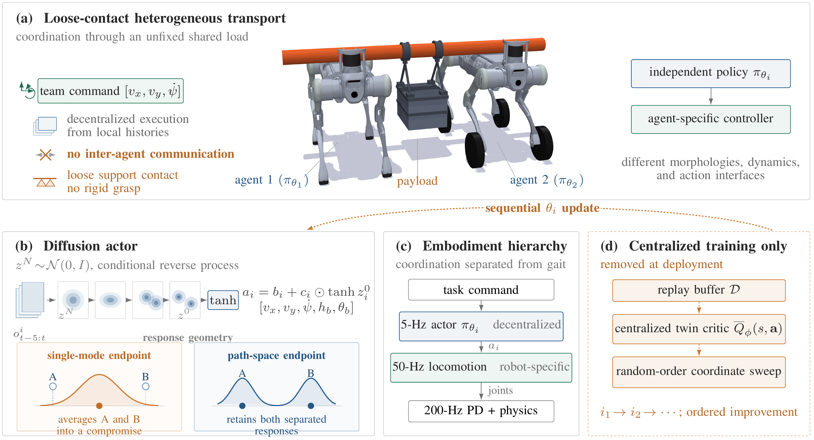
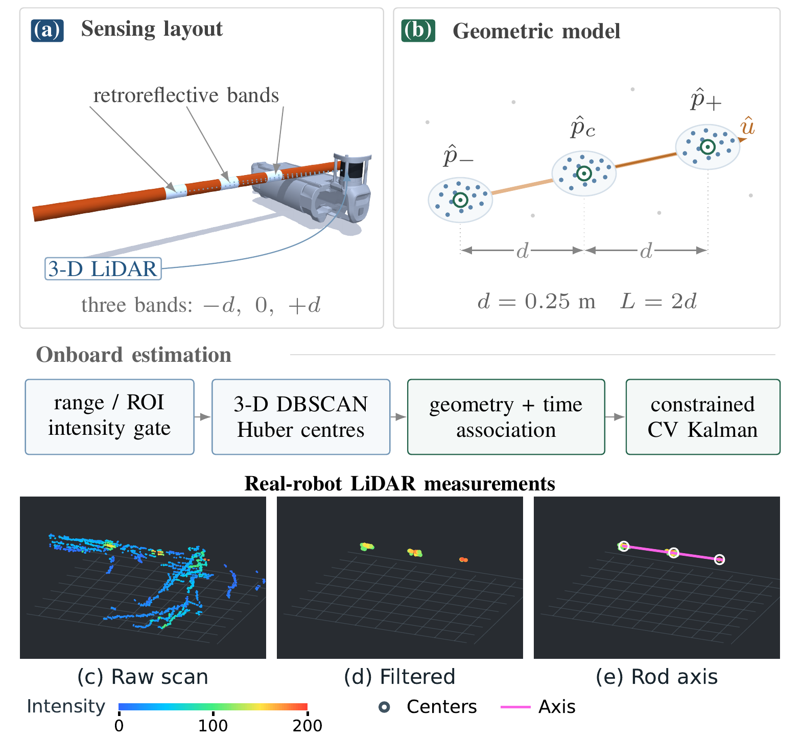

Value-guided diffusion
Agent-specific diffusion samplers learn stochastic, bounded responses using a critic-guided variational path objective.
Multi-robot learning & control
Different robots. Independent policies. One shared load.
This video could not be loaded. Open the MP4 directly.
Straight-line transport, coordinated turning, and human–robot collaboration.
When robots carry an unfixed object together, every movement changes what their partners must do.
Different morphologies make this coupling harder: legged and wheeled-legged robots have different dynamics, action interfaces, and locomotion controllers. The shared payload must remain supported while each robot responds to its own observations.
HA-DiPO (Heterogeneous-Agent Diffusion Policy Optimization) learns an independent diffusion policy for each agent. A centralized critic guides sequential policy updates during training. At execution, each robot acts from its local observation history through a frozen, embodiment-specific locomotion controller.
Task coordination above
embodiment-specific locomotion.

Figure 1. Overview of HA-DiPO. Heterogeneous agents support an unfixed payload through loose contact. Agent-specific diffusion policies map local histories to bounded responses, while a control hierarchy separates coordination from locomotion. The centralized critic and sequential updates are used only during training.
View full sizeConfiguration note: the original manuscript figure shows 5 Hz coordination; the current demonstration setup uses 10 Hz.
Agent-specific diffusion samplers learn stochastic, bounded responses using a critic-guided variational path objective.
Each agent updates against teammates already improved in the current sweep, accounting for their changing responses.
Each robot uses its own observation history. The coordination policy runs above its existing locomotion controller.
The estimator combines onboard 3-D LiDAR and IMU measurements to recover the payload center and axis in each robot’s local frame. Three retroreflective bands provide geometric constraints for association and filtering.

Figure 2. Geometry-constrained onboard payload perception. Panels (a)–(b) show the sensing layout and three-band model, with the estimation pipeline below. Panels (c)–(e) show raw points, filtered returns, and the rod-axis estimate from one static real-robot LiDAR scan. White circles mark measured cluster centers; the magenta line spans the estimated outer-marker baseline. The three measured views share the viewpoint and intensity scale.
View full sizePolicies trained in Isaac Lab, executed in MuJoCo with B2 + B2W and B2 + B2 teams.
This video could not be loaded. Open the MP4 directly.
Forward, backward, lateral, and turning commands in one continuous rollout.
Continuous rolloutThis video could not be loaded. Open the MP4 directly.
Two quadrupeds carry a shared rod through a sequence of motion commands.
Continuous rolloutThis video could not be loaded. Open the MP4 directly.
Forward transport with a +0.35 m/s command, followed by a stop.
Forward motionThis video could not be loaded. Open the MP4 directly.
Backward transport with a −0.25 m/s command, followed by a stop.
Backward motionThis video could not be loaded. Open the MP4 directly.
Coordinated turning with a +0.25 rad/s yaw command, followed by a stop.
Left turnThis video could not be loaded. Open the MP4 directly.
Coordinated turning with a −0.25 rad/s yaw command, followed by a stop.
Right turnThis video could not be loaded. Open the MP4 directly.
Sideways transport with a +0.22 m/s lateral command, followed by a stop.
Lateral motionThis video could not be loaded. Open the MP4 directly.
A 40 N backward push is applied to the payload for 0.4 s. The orange arrow shows the applied force.
External perturbationThis video could not be loaded. Open the MP4 directly.
Straight-line cooperative transport with the shared beam.
Straight-line transportThis video could not be loaded. Open the MP4 directly.
Straight-line cooperative transport with a combined beam-and-payload mass of approximately 8 kg.
Straight-line transportThis video could not be loaded. Open the MP4 directly.
Coordinated turning while carrying the shared beam.
Coordinated turningThis video could not be loaded. Open the MP4 directly.
Coordinated turning while carrying the beam and added payload.
Coordinated turningThis video could not be loaded. Open the MP4 directly.
Shared-load transport with a human partner.
Human–robot collaboration